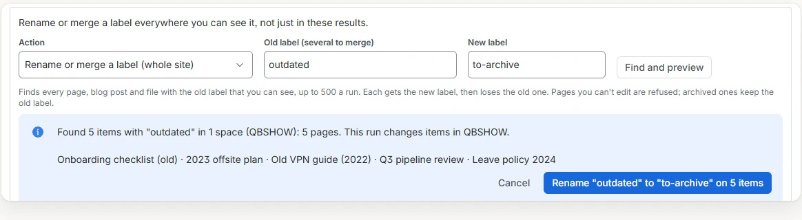

How to rename or merge a label in Confluence Cloud
Confluence Cloud has no way to rename, merge or delete a label. The request, CONFCLOUD-7681, has been open since 2007. Clicking a label only opens a search for the pages that have it. To rename a label, each page has to gain the new label and lose the old one, either by hand or with an app that does it for every page you can edit.
With Confluence on its own
First list the pages: click the label on any page (it opens Confluence search filtered to that label), or search label = "old-label". Then, on each page:
- Open a page. Its labels show as chips at the bottom of the page, next to Add a comment. You don't need to edit the page.
- Click the labels. The Details panel opens; under Labels, press + (Add label) to open Edit labels.
- Type a label in + Add label, or press × on a label to remove it. Changes apply straight away; close the dialog when you're done.
Add the new label first, then remove the old one, so no page is left with neither. To merge two labels, do the same for each old label.
With Automation: Confluence Automation has a template, “Replace a label on all pages when scheduled (recurring)”. It's a scheduled flow whose Branch flow / related entities step finds pages with a CQL search (label = "old-label"), then runs Remove label and Add label on each one. Put Add label first, so a page isn't left with neither if a run stops part-way, and try it on one space before the whole site.
Where it falls short
- By hand, one page at a time. The label's search page has no rename, merge or delete, and nothing that acts on all its pages.
- Automation needs a flow built for each rename, runs on a schedule, and shows no preview of which pages it will change.
- No undo either way. If you rename the wrong label, you change every page back yourself.
Across every space with Query & Bulk Actions
- A Confluence admin installs Query & Bulk Actions; anyone can then open it from the Apps menu.
- Choose the action Rename or merge a label (whole site). You don't need to run a search first.
- Type the old label (several, separated by commas, to merge them) and the new label, then press Find and preview. The preview says how many pages, blog posts and files have it, in which spaces, and which already have the new label.
- Confirm. Each item gets the new label, then loses the old one, as you. Pages you can't edit are refused and listed, and archived pages keep the old label (Confluence won't change them).
- Up to 500 items a run; Find the next ones carries on. Undo these changes puts every label back as it was.

Disclosure: Kitefold makes Query & Bulk Actions, so we're not neutral. Changing labels by hand is free and fine for a few pages.
Related guides
- How to add labels to many Confluence pages at once
- Confluence CQL cheat sheet
- Confluence clean-up searches with CQL, and what CQL can’t find
Checked against Confluence Cloud in November 2026, on our test site. Confluence changes often; if something here no longer matches what you see, email support@kitefold.app and we'll update it.